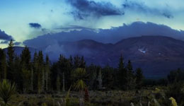

⇧
Скролить?

new zealand timelapse
Equipé de son appareil Canon 5D Mark II, le réalis ateur Bevan Percival nous offre une nouvelle vidéo en technique timelapse absolument magnifique
new zealand timelapse
Equipé de son appareil Canon 5D Mark II, le réalis ateur Bevan Percival nous offre une nouvelle vidéo en technique timelapse absolument magnifique
new zealand timelapse
Equipé de son appareil Canon 5D Mark II, le réalis ateur Bevan Percival nous offre une nouvelle vidéo en technique timelapse absolument magnifique
Показать еще